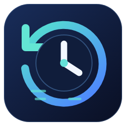

TimeMachine
for VS Code
Your coding day,
with context.
Coding time. Command history.
Local project activity.
My coding / AI-assisted
JSON + CSV reports
EXAMPLE PROJECT
example-app
npm test · failed
Inspect the saved changes before the failure
src/app.ts saved
Compare an available before / after snapshot
example-app opened
Keep the full project folder in view